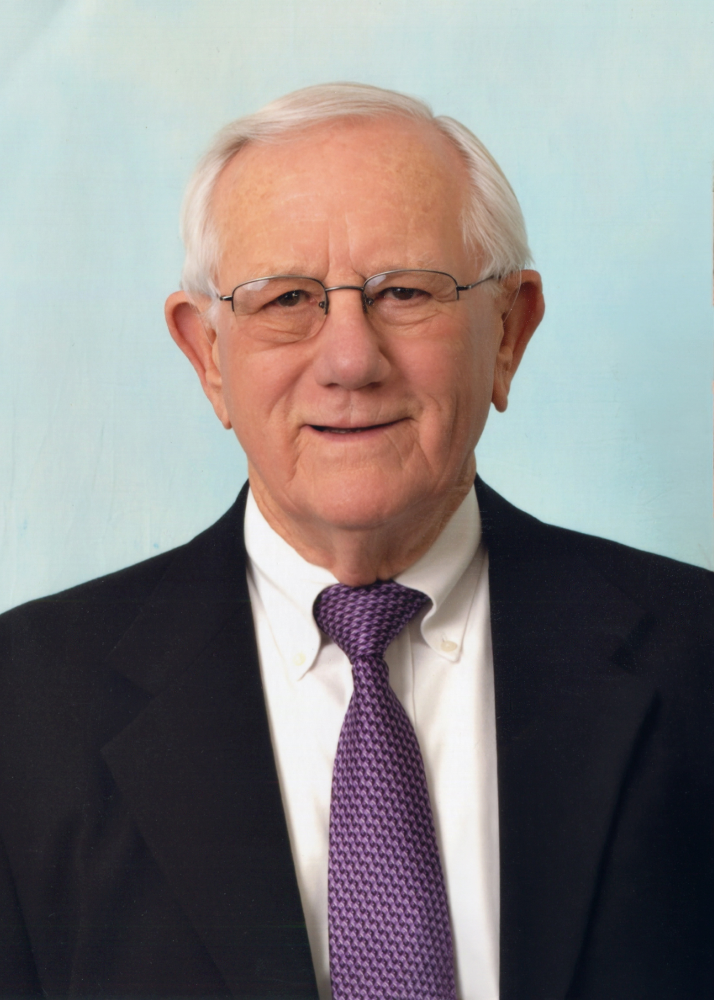

November 5, 1933 – July 7, 2026
Donald Bruce Maier, age 92, of West Windsor, NJ, died on July 7, 2026 surrounded by the love of his family. Don was born in Fords, New Jersey, on November 5, 1933 to Ellen Rennie Maier and Harold O. Maier. He grew up in Fords with his brothers Harry and Gerry. He attended Woodbridge Township schools in Fords and Woodbridge High School, where he played football and achieved membership in the National Honor Society.
After graduating from high school, Don attended Rutgers University, where he majored in Mathematics and graduated with honors in June of 1955.
Don married the love of his life, Joan Elizabeth Vollmann, shortly afterwards on June 12, 1955, and they went on to raise a family of four children: Donald Jr., Joy, Jane, and Alison.
After college, Don began work with the Metropolitan Life Insurance Company (MetLife), where he went on to achieve the title of Vice President and Actuary. He worked at MetLife until his retirement in 1993.
Don and Joan raised their children in Woodbridge, New Jersey, where the family attended the First Presbyterian Church of Woodbridge, and where Don taught Sunday School for many years. Don was also the President of the PTA where his children attended schools.
Later, Don and Joan moved to West Windsor, New Jersey to be closer to their grown children and to their grandchildren. They were lucky enough to have all eight grandchildren living nearby, and the extended family spent as much time together as possible.
They joined Dutch Neck Presbyterian Church in West Windsor, where they tended the gardens and services. Don remained a member until the time of his death.
In the earlier years, when his children were young, Don enjoyed taking them camping nearly every weekend. Family vacations were always casual and fun and spanned much of the United States. Don became an expert at backing up a pop-up camper, and later a small motor home, into many a tiny spot across the US and Canada.
Later, vacations were enjoyed at Myrtle Beach, SC, with the grandkids and on several cruises. In fact, cruising was one of the activities Don and Joan enjoyed the most, having embarked on more than 50 together spanning the globe.
Don loved his baseball games, card games, and keeping statistics about those games. He loved to make people laugh, always having a joke or a Yogi Berra quote at the ready — especially with his kids, grandkids, and great-grandkids. He could be seen on the floor, in the sand, or anywhere else to be at eye level with the kids, remarkably, up to his very last days with his great-grandkids.
“He loved family parties and was a wonderful host. He will be missed and his humor and love will be cherished.”
He also loved a good horseshoe game and, later, bocce. He was the best sport about helping Joan garden, and could be seen planting a tree as recently as a few years ago.
Don is survived by his loving wife, Joan; their children, Donald B. Maier Jr., Joy Maier Whipple (Bill), Jane Spetalnick (Noel), and Alison Maier (Deanna Hershey); their grandchildren, Sally Maier, Paul Maier (Andrea Claussen), Laura Whipple McClammer (Jamie), Robert Whipple (Sara DeSimine), William Whipple, Ralph Spetalnick (Heather), Chloe Spetalnick (Brian Hunt), and Sam Spetalnick (Kate Keough); and seven great-grandchildren.
He also leaves behind his sister-in-law, Barbara Maier, and many, many nieces and nephews.
In loving memory, held close in these pages and in every story still told.